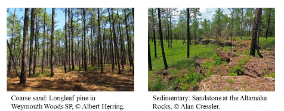
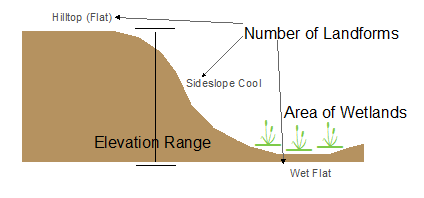
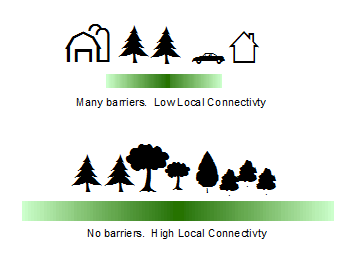

Terrestrial Resilience Core Concepts
Resilient Site: An area of land with sufficient variability and microclimate options to enable species and ecosystems to persist in the face of climate change and which will maintain this ability over time.
Geophysical Settings: Broadly defined landscape types that contain a variety of plants, animals and natural habitats that occur in similar geologic environment (e.g. similar bedrock, soils and elevation zone). If conservation succeeds, each geophysical setting will support species and communities that thrive in conditions defined by its physical properties, although the species in the future may differ from those currently present. In this study, we defined geophysical settings by mapping and classifying combinations of geology and elevation.
Natural Stronghold: a resilient site that currently supports exemplary habitats, wildlife, or rare species, and may provide refuge for these elements as the climate changes.
Two Example Settings:
|  |
Resilience Score: A site’s Resilience Score estimates its capacity to maintain species diversity and ecological function as the climate changes. The score is relative to all other sites with the same geophysical setting and is described on a relative basis as above or below average. For example, granite mountains were compared with other granite mountains, and coastal plain sands were compared with other coastal plain sands. Our goal was to identify the places most resilient to climate change for each type of setting. A site’s final resilience score was determined by evaluating physical characteristics that foster resilience, particularly the site’s landscape diversity and local connectedness.
Characteristics that Foster Resilience: A resilient site is one that offers many options to species and ecosystems. Such options, include topographic and elevation diversity that provide a range of habitat types and microclimates (landscape diversity), and minimal barriers that restrict adaptive movement of species or ecosystems (local connectedness).
Landscape Diversity: Refers to the microhabitats and climatic gradients available in one’s immediate neighborhood. Topographic diversity buffers against climatic effects because the persistence of species in an area increases in landscapes with a wide variety of microclimates. In this study, we measure microclimates by counting the variety of landforms, measuring elevation range, and the density of wetlands in a 100 acre neighborhood around every point on the landscape.
|  |
Local Connectedness: refers to the number of barriers and the degree of fragmentation within a landscape. A highly connected landscape promotes resilience by allowing species to move around the landscape and find suitable microclimates where they can persist. In this study, we measure local connectedness by measuring the amount of natural land cover and configuration of human-created barriers like major roads, developments, and agricultural land.
|  |
Riparian Climate Corridors: Riparian areas are the floodplains and zones along water bodies that serve as interfaces between terrestrial and aquatic ecosystems. With respect to climate change, riparian areas feature micro-climate refugia that are significantly cooler and more humid than immediately surrounding areas. Our objective was to identify intact riparian floodplain areas that serve as natural corridors to facilitate movement of plants and wildlife linearly, taking advantage of the cooler moister environment within these areas.